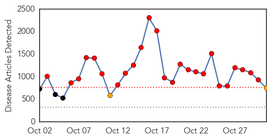
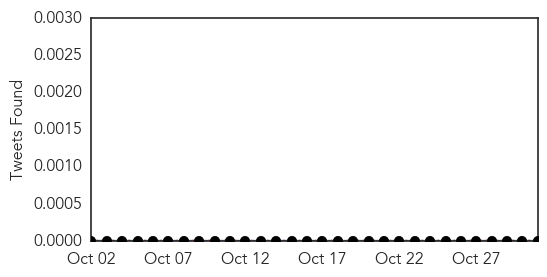

Ebola
30-Day Web Trend
25 alerts, 2 warnings

30-Day Twitter Trend
5 alerts, 14 warnings

Article Locations

Article Confidences

Top Articles:
- 1.000
- Nov. 15, 2014
- 1.000
- Worst Ebola outbreak on record tests global response - World
- 1.000
- Latest Ebola News: Scientists reveal role of genes in body's response to Ebola
- 1.000
- Ebola in US: West Africans in New York face Ebola stigma
- 1.000
- Ebola in US: Obama campaigns in Maine, avoids Ebola controversy
- 1.000
- NZ prepared for Ebola
- 1.000
- Woman being monitored for Ebola in Oregon hospitalized
- 1.000
- News Guide: A look at latest Ebola developments
- 1.000
- Experts urge caution over Ebola hopes
- 1.000
- Mt. SAC professor backs new state Ebola quarantine guidelines
- 1.000
- Let’s Talk about Ebola Survivors and Sex
- 1.000
- How are Ebola patients' footsteps traced?
- 1.000
- Maine Voices: To fight epidemic of fear, we must be guided by science, not emotion
- 1.000
- Ebola Continues to Spread Among Health Care Workers
- 1.000
- Pakistan Today
- 1.000
- Experts urge caution over Ebola hopes
- 1.000
- The Evidence Demands Ebola Quarantines
- 1.000
- Risk of Ebola low, yet county preps
- 1.000
- Ebola Outbreak in Liberia May Be Slowing: WHO
- 1.000
- Experts urge caution over Ebola hopes
- 1.000
- Can You Really Get Ebola from a Sneeze?
- 1.000
- Health Dept.: Person monitored for Ebola tests positive for malaria after traveling to West Africa
- 1.000
- Woman being monitored for Ebola in Oregon hospitalized
- 1.000
- In Guangdong, nervy Chinese ramp up Ebola watch
- 1.000
- Ebola outbreak unlikely in Australia but no room for error, experts warn
- 1.000
- In Guangdong, nervy Chinese ramp up Ebola watch
- 1.000
- The most from the coast
- 1.000
- The most from the coast
- 1.000
- Canada bans travelers from Ebola hot spots
- 1.000
- Canada bans travelers from Ebola hot spots
- 1.000
- Nation torn on returning Ebola workers
- 1.000
- GlaxoSmithKline plc (ADR)(NYSE
- 1.000
- Ebola screening trickles down to doctors' offices, care clinics
- 1.000
- Experts urge caution over Ebola hopes
- 1.000
- UN official: No need to quarantine everyone from Ebola hotspots
- 1.000
- Ebola crisis: US judge eases quarantine limits on nurse Kaci Hickox, who treated Sierra Leone patients
- 1.000
- News Guide: A look at latest Ebola developments
- 1.000
- Fear Ebola? Doctors say get flu shot
- 1.000
- Ohio State establishes Ebola virus reporting process
- 1.000
- Medical Science Doesn’t Support Official Rhetoric On Ebola
- 1.000
- Ebola is minor threat locally, but health officials are ready
- 1.000
- Fearing Ebola? Doctors say get a flu shot
- 1.000
- Vermonter voluntarily quarantined after trip to West Africa
- 1.000
- News Guide: A look at latest Ebola developments
- 1.000
- News Guide: A look at latest Ebola developments
- 1.000
- Stopping Ebola: Mali Matters; Maine and Manhattan Don't
- 1.000
- New York doctor with Ebola improves, nurse reunited with dog
- 1.000
- Inside the world's worst Ebola outbreak
- 1.000
- First Ebola Suspect Hospitalized in Finland
- 1.000
- Finland prepares to treat first suspected Ebola patient
Showing top 50 articles...
Top Tweets:
- 0.924
- A reminder from: Flu & Ebola have some similar symptoms but flu is common Ebola is very rare. http://t.co/5SfTXavG6U getafluvax
- 0.793
- Inference and Forecast of the Current West African Ebola Outbreak in Guinea Sierra Leone and Liberia http://t.co/CrHiXX4ZRJ
- 0.773
- 3/n Healthcare infections continue to climb: 523 have contracted Ebola and 261 have died. Tragic.
- 0.766
- Mali identifies two suspected Ebola cases; Strategies for containing Ebola in W. Africa. HealthSecurity http://t.co/H1JhGDbj22
- 0.733
- So... in Ebola news things in Liberia may be starting to look up but what bout Sierra Leone? SL now looks worse than Liberia did.
- 0.717
- RT: The world is close to an Ebola vaccine human trials have already started & there is possibility of a Vaccine by December Ebo…
- 0.699
- Click the link n read. Update urself on d outbreak n share d message. supportTAE Ebola virus outbreak http://t.co/C9E1u1FncR via
- 0.684
- Watch new Ebola Q&A w/CDC’s Dr. Srinivasan on caring for patients during flu season. Travel history key: http://t.co/3Cdl68bPxK
- 0.673
- BBC News - Ebola outbreak: UK aid ship docks in Sierra Leone http://t.co/oar05trIQA
- 0.626
- RT: South Africa - Johannesburg: South African man who returned from Sierra Leone being tested for ebola http://t.co/clHJUBT…
- 0.567
- RT: Georgia politician - Obama deliberately spreading Ebola but epidemic might be way to deal w homosexuals. @Salon htt…
- 0.547
- Morning all. Thinking of Africa Thinking of West Africa a Ebola affected Regions Thinking of Sierra Leone Guinea Liberia and Mali
- 0.547
- Ebola update from: 13567 known cases 4951 deaths. All contacts of Spanish nurse have cleared 21 days http://t.co/mMW9JT0bfb 1/n
- 0.525
- RT: Proud to join the President & recognize our American health care workers & their efforts to stop ebola outbreak. https://t…
Meningitis
30-Day Web Trend
2 alerts, 4 warnings

30-Day Twitter Trend
0 alerts, 0 warnings

Article Locations

Article Confidences

Top Articles:
Top Tweets:
-
No tweets found for Oct 31, 2014